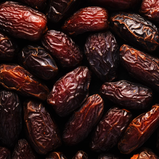
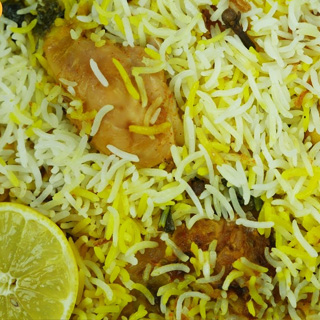

We are the latest dry fruits manufacturer coming up with the delicious, nutritious, healthier
and hygienic products for you.
Why eat dry fruits?
Because it retains the nutritional value and has long shelf life.

Dates.

Dry Fruits

Quick Biriyani
quick biriyani
Are you new in kitchen and trying to make tasty biriyani? Not to worry. Prepare your favourite Biriyani In just 10 mins. you get the same taste, same aroma with less effort. Just add up all the ingredients as recommended (in the Pack) in and cook. And you become the maker of tasty biriyani.